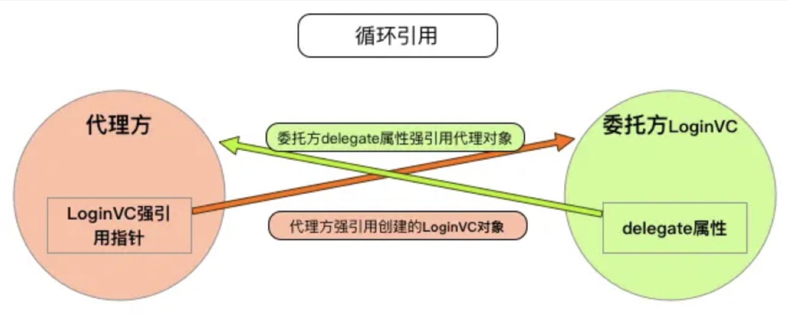
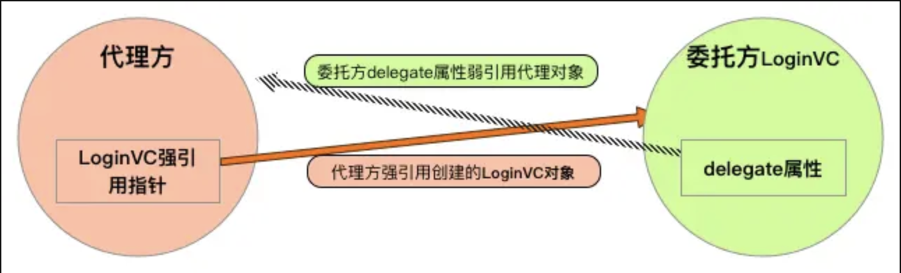

delegate需要使用weak
delegate很好理解为什么需要使用weak。看如下登录代码的实现
#import <Foundation/Foundation.h>
@protocol LoginProtocol <NSObject>
@optional
- (void)userLoginWithUsername:(NSString *)username password:(NSString *)password;
@end
#import <UIKit/UIKit.h>
#import "LoginProtocol.h"
/**
* 当前类是委托类。用户登录后，让代理对象去实现登录的具体细节，委托类不需要知道其中实现的具体细节。
*/
@interface LoginViewController : UIViewController
// 通过属性来设置代理对象
@property (nonatomic, weak) id<LoginProtocol> delegate;
@end
实现部分：
@implementation LoginViewController
- (void)loginButtonClick:(UIButton *)button {
// 判断代理对象是否实现这个方法，没有实现会导致崩溃
if ([self.delegate respondsToSelector:@selector(userLoginWithUsername:password:)]) {
// 调用代理对象的登录方法，代理对象去实现登录方法
[self.delegate userLoginWithUsername:self.username.text password:self.password.text];
}
}
// 遵守登录协议
@interface ViewController () <LoginProtocol>
@end
@implementation ViewController
- (void)viewDidLoad {
[super viewDidLoad];
LoginViewController *loginVC = [[LoginViewController alloc] init];
loginVC.delegate = self;
[self.navigationController pushViewController:loginVC animated:YES];
}
/**
* 代理方实现具体登录细节
*/
- (void)userLoginWithUsername:(NSString *)username password:(NSString *)password {
NSLog(@"username : %@, password : %@", username, password);
}
- 可以看出代理方
ViewController强持有了委托方loginVC,loginVC的delgate属性会指向ViewController, 假设loginVC强持有delegate属性那么就会出现图1中的情况，代理方ViewController强持有loginVC对象，delegate属性强持有ViewController对象这样就会出现循环引用问题。

- 那么只能将
delegate设置为弱引用属性这样就不会出现delegete强持有代理对象了就不会出现循环引用了，这样代理对象如果生命周期结束后那么delegate和loginVC就释放了。

block中需要使用weakSelf
如下代码会出现什么问题？
self.block = ^{
//方式1
NSLog(@"block内部：%@", @[self]);
//方式2
NSLog(@"block内部：%@", _name);
};
由于当前类持有了block，在block又捕获了self，造成了 self->block->self 引用循环问题.方式2也出现了self的属性name,但是_name等同于self->name相当于捕获了self依旧会出现引用循环。那么怎么解决这个问题.
方案1:
__weak typedef (self) weakSelf = self;
self.block = ^{
NSLog(@"block内部：%@", @[weakSelf]);
};
方案2:
__weak typedef (self) weakSelf = self;
self.block = ^{
__strong id strongSelf = weakSelf;
NSLog(@"block内部：%@", @[strongSelf]);
};
方案3:
__weak typedef (self) weakSelf = self;
self.block = ^{
__strong id strongSelf = weakSelf;
if(strongSelf) {
NSLog(@"block内部：%@", @[strongSelf]);
}
};
这三种方案其实都可以解决循环引用问题，但是在方案1中如果仔细分析的话可能会出现的问题是weakSelf有可能会出现nil的情况那么就会崩溃，那么在方案2中进行了改进增加了strongSelf强持有weakSelf，这下不会出问题了吧，但是同样会出现如果weakSelf如果为nil的情况那么stongSelf也会为nil。终极方案3中针对了strongSelf进行了判断是否为nil之后再加入到数组中这样就不会出现崩溃的问题了，那么在日常开发中可能会出现这样的问题，可能需要判断的严谨一些。
附加题：
1.为什么
masnory没有循环引用的问题？因为没有出现持有关系 //TODO
2.
GCD是否需要考虑循环引用问题？不会出现循环引用，在
dispatch_async文档中说明了块中会立即返回当前内容所以不用考虑循环引用问题。2.1 YYDiskCache中为什么使用
__weakSelf？- (void)_trimInBackground { __weak typeof(self) _self = self; dispatch_async(_queue, ^{ __strong typeof(_self) self = _self; // ① if (!self) return; // ② dispatch_semaphore_wait(self->_lock, DISPATCH_TIME_FOREVER); [self _trimToCost:self.costLimit]; [self _trimToCount:self.countLimit]; [self _trimToAge:self.ageLimit]; [self _trimToFreeDiskSpace:self.freeDiskSpaceLimit]; dispatch_semaphore_signal(self->_lock); }); }作者回答：在①处，
block会捕获到_self，这个值是 weak 的，随后在 block 执行①时，这个__weak _self会被赋值为__strong self。在②处，如果weak self已经被释放，那么这里就会直接返回。这么做能避免循环引用，并且能确保在使用self时其不会被释放。网友回答：这里是否有必要使用
__weak我认为是看自己的需求而定的,block持有外部变量的特性可以帮我们延长对象生命周期 yy这种写法当执行block时如果self释放了,那么接下来block内部的逻辑就不会再执行. 如果不用__weak修饰的话由于queue->block->self,那么此时self是不会释放的,block的逻辑会得到执行,执行完以后queue释放block,block释放self,所以也不会有循环引用 所以还是看自己想得到哪种效果了.
3.下面代码会不会出现循环引用?
- (void)testRetainCircle { [self testWithBlock:^{ [self test]; }]; } - (void)testWithBlock:(void(^)(void))block { block(); } - (void)test { NSLog(@"test"); }
不会出现循环引用问题
4. 如何查找循环引用问题
- 1.项目中存在的循环引用的问题的场景和解开循环的方案。（代理，Block，timer，A-B-C-A 等）
- 2.当下主流的内存管理的快速追溯方案有哪些，思路是什么。比如 FBRetainCycleDetector ，MLeaksFinder，PLeakSniffer。
在 Obj-C 中，如何检测内存泄漏？你知道哪些方式？
- Memory Leaks
- Alloctions
- Analyse
- Debug Memory Graph
- MLeaksFinder
泄露的内存主要有以下两种：
Laek Memory这种是忘记Release操作所泄露的内存。Abandon Memory这种是循环引用，无法释放掉的内存。
上面所说的五种方式，其实前四种都比较麻烦，需要不断地调试运行，第五种是腾讯阅读团队出品，效果好一些，感兴趣的可以看一下这两篇文章：